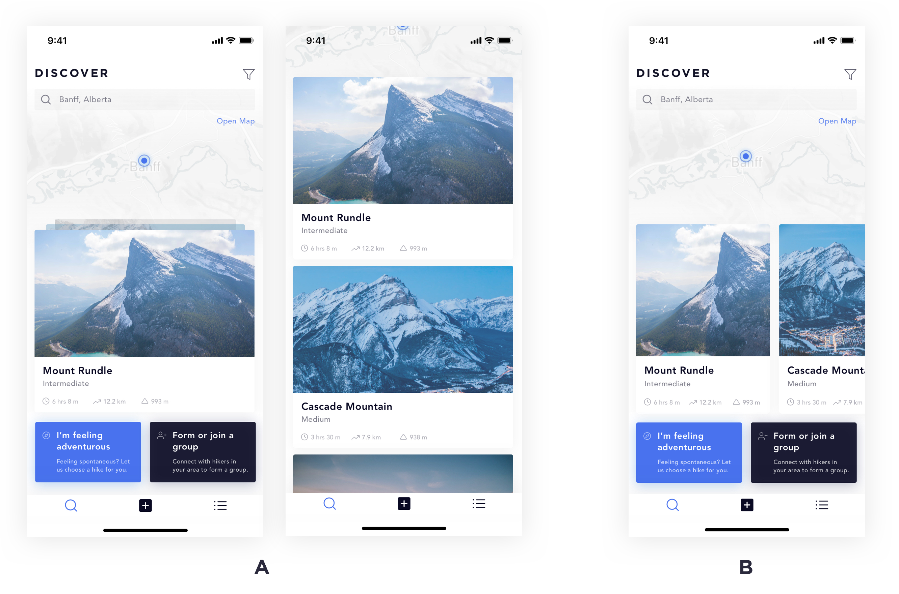

Atlas
November 2018
During my internship at Deloitte, I was sent away to Alberta for a client project. This passion project was born from the inspiration of the mountainous landscape. As a sole Product Designer on this project, I spent my time researching, designing, prototyping and testing this concept.
The Problem
Curious travellers and hikers want to explore and see as much as they can at the destination they are at. Not all information from various sources are the same or in-depth which may confuse new travellers/hikers. Some may even find it difficult to find a trail that would suit their needs.
Scanning for mountains and trails using Augmented Reality
The idea that sparked this entire project. Curious hikers are able to scan for information on a mountain or trail using their phone. This concept was created on Adobe After Effects.
A More Detailed Page for Hikers
Through my research, I discovered there was a need for additional and accurate information for hiking trails. The most important information that was missing from most sources were hazards. Users are typically concerned with how dangerous the hike would be which would impact their decision making. For instance, one user I talked to avoids hikes where they must scale or climb rocks. Bears, unpaved and pet-friendly trails were also a concern for some users as well.
Other types of information users wanted to see were weather, sunset/sunrise times, peak times and navigating to the trail from where the user is.

Crowdsourcing Information for Trails
Through talking to users and some secondary research, I discovered that information such as elevation gain, time, difficulty and distance of each hikes varied between different sites, blogs and apps.
One solution for this problem would be to crowdsource this information when a user completes a hike. After completing this form, Atlas would adjust this information based on a user’s experience level and would then average out the information received from users.

Searching for Trails
Most users I’ve talked to has said that they discover trails through a Google search. The Atlas Discover feature would be able to help users find hikes in their area based on their experience level and would be able to filter through these options.
I wanted to try two different layouts for ‘Discover’ and decided to A/B test these layouts on my users. I wanted to understand how efficient it was for users to find something they were looking for.
After testing with users, layout B became the clear choice as the layout was easier for users to understand and it was more efficient when they were looking for a trail based on the scenario they were given. I reiterated the designs based on feedback and then created an interactive prototype on Origami Studio.
Process
One of the main purposes of this project was for the development of my skills in various areas in design. I wanted to conduct and analyze my own user research, explore various user testing methods I’ve never tried before, improve my visual design skills, and develop my interaction design skills, including the creation of animated prototypes on Origami Studio and Adobe After Effects. This was the process that I followed which would help me achieve my goals.
Research & Analysis
Before I began this project, I surveyed 23 users and conducted 6 interviews on users that have experience or have an interest in hiking.
Here are some sample insights that I analyzed from my research.
Afterwards I created a persona for both beginner and experienced hikers based on the data I collected from my research.
Initial Sketches
Before creating screens on Sketch, I always start off by drawing wireframes in my sketchbook. I was also focused on interaction design so I started planning for the interactions for these screens as well.

Style Guide & Design System
I wanted Atlas to remind me of the mountainous landscape. For this purpose, I used blues and greys, sharp edges and clean typography.
After completing the first version of screens, I tested it on 5 users. In between testing sessions, I reiterated the design based on the feedback I collected from the previous testing session in preparation for the next. Below are components that I’ve reiterated based on research, testing and/or visual preference.
Testing
When I was testing the hiking layout page, I had my users card sort the information with sticky notes so that I could understand their decision making and improve the information architecture of the hiking info page. For the hiking discovery page, I decided to test two different layouts using A/B testing for efficiency in finding what they’re looking for and the usability of the page.
What I’ve learned
I’ve learned a lot about design and testing while working on Atlas. Here are some key lessons that I’ve learned from this project.
Designing Systematically — After designing multiple components for Atlas and individually testing for a few, I figured out that it would’ve been more efficient to do it this way than designing the entire project feature by feature. Testing and reiterating each component through data and feedback, and then putting it all together would make a product better overall.
Research & Testing Feedback — As I was eager to start my project, I went straight into my research without reiterating my test plans or receiving feedback from others. Through interviewing and testing on users, each session I was able to discover what was working and what wasn’t, and was able to improve that component of my testing for next time.
Trying something new — One of the main goals for this project was for me to try something new. For someone with no experience in A/B testing and card sorting with users, I was able to grasp these concepts quickly and saw how much these testing methods would improve a product. Different testing methods work depending on the situation but I would definitely try other methods I haven’t yet next time.
Practicing my prototyping skills — Learning a new tool is tough and scary at first but through creating prototypes on Origami Studio, I was able to dig deep into the tool and learn the powerful features of it. There were many times I was stuck on an error for hours or days but through trial and error and perseverance I was able to discover what I was doing wrong and can now creating prototypes (hopefully) a lot faster.
I could continue researching, testing and reiterating different features on this project for months but I thought this was a good point to wrap this project up. After a month of designing, I’ve definitely learned a lot about myself as a designer. Thank you for reading!